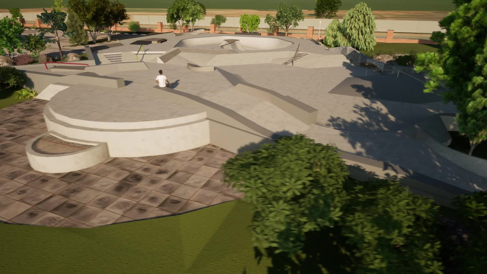

01
Concept design
Early ideas for skateparks, plazas, youth space, and public-use sites that need stronger form before the process flattens them out.
OLOVA helps people see and understand skate, youth, and public-space ideas before the expensive technical design phase locks everything down.
This work sits in the early stage where a project needs shape, atmosphere, and a believable public-space argument before the wrong version becomes permanent.
Early ideas for skateparks, plazas, youth space, and public-use sites that need stronger form before the process flattens them out.
Images that show scale, mood, circulation, and what gives a place its pull.
Feedback and framing that help a project make sense to the people around it before weak choices settle in.
OLOVA supports early skate-informed public-space thinking before a project becomes too expensive, too fixed, or too hard to explain.
The work fits best alongside landscape architects, planners, municipalities, nonprofits, public-space consultants, and design-build teams that need clearer concept direction, stronger visualization, and better community-facing project communication.
This is not a replacement for licensed technical work. It is founder-led concept, visualization, and skate-use support for teams that need the public-space idea to make sense earlier.
OLOVA is strongest when the question is still open: how the place should feel, how skating can belong without taking over, and how to show the idea clearly enough for people to respond to it.

This concept pushes against the old split between park and public space. It treats the site like a shared civic room where skating, sitting, crossing through, and gathering can all happen without pretending those uses are enemies.
The stronger part of this project is not one obstacle. It is the overall composition: shade, circulation, sculpture, seating, bridges, pockets of terrain, and enough open breathing room that the place does not collapse into feature spam.
It is trying to show that skate-aware design does not need to be tucked away at the edge of a site plan. It can help define the whole place.

Instead of a flat pad with scattered moves, the site gets a real point to gather around. That changes how people remember it.

They slow people down, frame the path, and make the site usable even when nobody is skating it.

Lighting, sightlines, and surface tone all change whether a public place feels alive or hollow.

It is a route, a marker, and a sectional move all at once. That kind of decision helps a concept stay with people.
A still image can explain the idea. Movement shows whether the space actually connects: skate lines, walking paths, edges, shade, pauses, and the public-space feeling around them.
The clip stays quiet and local to this section so the page still reads as design argument first.

Water, paths, planting, terrain, and civic form all work together here. The skating belongs to the place instead of fighting it.
This concept is more ambitious and more delicate. It tries to hold civic meaning, movement, greenery, and skate use together without flattening the site into symbolism or separating everything into neat little zones.
The point is not to bolt skate features onto a memorial setting. It is to ask what public space looks like when grief, resilience, daily life, and youth energy all have to exist together.
Slava Plaza is the largest expression of OLOVA's core design idea: skate terrain does not have to sit apart from civic life.
The concept brings memorial space, planting, water, walking routes, gathering areas, and skateable form into one public field. The point is not to make skateboarding invisible. The point is to make the whole place strong enough that skating becomes one layer of public life, not the only reason the space exists.
In a project shaped around memory, movement, resilience, and daily use, the skatepark works best when it is not treated like a cage, corner, or afterthought.
A park inside a skatepark. A skatepark hidden inside a civic place.

The memorial presence is held by the space around it: routes, water, planting, edges, and pauses.

The rail, the path, and the planted edge give the softer landscape something firm to work against.

That contrast matters. A public-space concept needs softness, but it also needs moments with enough clarity and force to hold the line.

This kind of detail keeps the design honest. The overall project can be civic and symbolic, but the terrain still has to work under someone's wheels.

Lusaka had over a hundred active skateboarders and no legal place to skate. The project work helped the Skate Association of Zambia frame what the space could be and what it would take to move toward a real park with real terrain.

Knucklehds started as a skateboarding collective and grew into youth development, urban culture, and community programming. The concept work treated the skatepark as a multi-use civic space, not just a concrete pad with an obstacle layout.

The concept was not about dropping skate features into a gap and calling it done. It used an overlooked city-owned space to make a clearer case for shared local use, trees, sound, basketball, and skating together.

Belong is part concept, part visualization, part practical effort. That mix is real, and it says something honest about how these spaces come together.
Zambia, Botswana, Lincoln Avenue, Belong, and older pieces are still part of the picture. They live in the archive so this page can stay focused without pretending the rest disappeared.
If you are working on a skate-informed public-space project, send a short note with the location, current stage, who is involved, and what decision feels stuck.
OLOVA is best suited to concept direction, visualization, early project framing, and community-facing design communication.